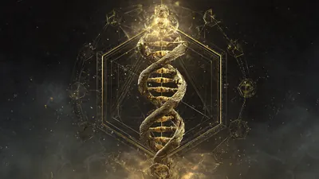
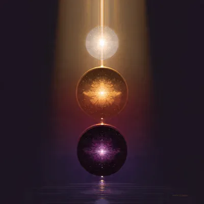
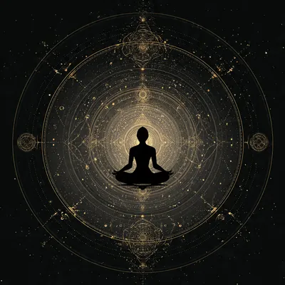
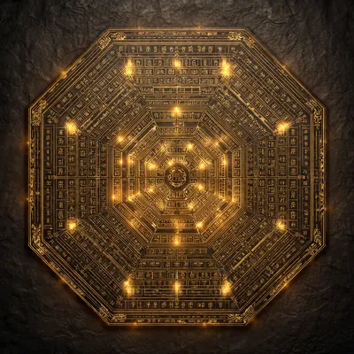
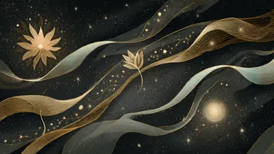
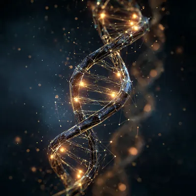

Le 64 Chiavi Genetiche di Richard Rudd per sbloccare il tuo potenziale più elevato: dall'Ombra al Dono, fino al Siddhi. Il sistema che unisce I Ching, DNA e coscienza.
🌱 Cosa Sono le Gene Keys?

Le Gene Keys: un sistema per trasformare le Ombre in Doni
Le Gene Keys sono un sistema di saggezza interiore e autoconoscenza sviluppato dall'autore e filosofo britannico Richard Rudd, presentato nel suo libro omonimo pubblicato nel 2009 e ampliato negli anni successivi. Il sistema parte da una domanda radicale: cosa accadrebbe se le nostre paure più profonde fossero in realtà doni nascosti in attesa di essere scoperti?
Il punto di partenza è la scoperta scientifica che il genoma umano è composto esattamente da 64 codoni — le unità fondamentali del codice genetico — un numero identico ai 64 esagrammi dell'I Ching, l'antico oracolo cinese del Libro dei Mutamenti. Questa straordinaria corrispondenza ha portato Rudd a elaborare un sistema che unisce genetica, cosmologia, psicologia profonda e spiritualità.
💡 Il Principio Fondamentale
Ogni essere umano porta nel proprio DNA una mappa unica della propria coscienza. Le Gene Keys suggeriscono che ciascuna delle 64 frequenze vibrazionali può essere espressa a tre livelli distinti: come limitazione inconscia (l'Ombra), come talento naturale (il Dono), o come stato di grazia superiore (il Siddhi). Il viaggio di evoluzione personale consiste nel trasformare le proprie Ombre in Doni e, nel lungo periodo, nei Siddhi.
Il sistema Gene Keys si distingue da altri strumenti di crescita personale per il suo approccio alla contemplazione piuttosto che all'azione immediata. Non si tratta di un test da fare una volta sola, ma di un percorso di approfondimento interiore che si sviluppa nel tempo, invitando a meditare su ciascuna chiave come su un oggetto d'arte spirituale.
Le radici intellettuali del sistema affondano in diverse tradizioni: l'I Ching cinese, la Cabala ebraica, l'astrologia occidentale, il sistema Human Design, la genetica moderna e le filosofie yogiche indiane. Rudd ha cercato di costruire un ponte tra la scienza del DNA e la saggezza spirituale millenaria.
🌗 I Tre Livelli Vibrazionali: Ombra, Dono, Siddhi

La triade vibrazionale Gene Keys: dalla paura alla grazia
Il cuore del sistema Gene Keys è la triade vibrazionale: ogni Chiave Genetica esiste simultaneamente su tre frequenze di coscienza. Comprendere questa struttura è fondamentale per lavorare con il sistema.
🌑
OMBRA
La frequenza della paura e della reazione inconscia. Il livello dell'ego in difesa.
🌿
DONO
La frequenza del talento naturale. Il potenziale creativo che emerge dalla consapevolezza.
✨
SIDDHI
La frequenza dell'illuminazione. Lo stato di grazia e unità con il tutto.
🌑 L'Ombra — La Prigione del Condizionamento
Le Ombre sono i programmi inconsci che guidano i nostri comportamenti quando operiamo dalla paura. Non sono difetti morali ma risposte di sopravvivenza cristallizzate. Esempi di Ombre: Entropia (Gene Key 1), Spostamento (Gene Key 2), Caos (Gene Key 3). Riconoscere le proprie Ombre senza giudicarle è il primo passo della trasformazione.
🌿 Il Dono — Il Talento che Attende
I Doni emergono naturalmente quando smettiamo di resistere alle nostre Ombre. Sono qualità concrete e fruibili nella vita quotidiana, non stati mistici irraggiungibili. Ogni Dono è un'espressione creativa che può fiorire nelle relazioni, nel lavoro e nell'espressione personale. L'accesso al Dono avviene attraverso la contemplazione e l'accettazione.
✨ Il Siddhi — L'Apice della Coscienza
I Siddhi sono stati di coscienza supremi, rari e non perseguibili volontariamente. Non sono obiettivi ma possibilità che si manifestano spontaneamente quando un essere umano vive pienamente nel suo Dono. Sono descrizioni di come la coscienza universale può esprimersi attraverso un individuo: Bellezza, Amore, Innocenza, Grazia, Illuminazione.
La pratica con le Gene Keys invita a non saltare direttamente ai Siddhi, ma a lavorare pazientemente con le Ombre per sbloccare i Doni. I Siddhi si prendono cura da soli.
✨ L'Ologramma Aurico — Il Tuo Profilo Personale

L'Ologramma Aurico: la mappa del tuo territorio interiore
Ogni persona ha un profilo Gene Keys unico, chiamato Ologramma Aurico. Questo profilo si calcola in base alla data, ora e luogo di nascita — proprio come un tema natale astrologico o una carta Human Design. Il profilo rivela quali Gene Keys sono più attive nella tua vita e come sono interconnesse.
L'Ologramma Aurico è suddiviso in tre grandi Sequenze, ognuna con una funzione specifica nel percorso di evoluzione personale:
Sequenza 1
🔱 Sequenza dell'Attivazione
Esplora il tuo scopo di vita, il tuo talento naturale più profondo e le Ombre primarie che bloccano la tua espressione.
Sequenza 2
💞 Sequenza di Venere
Rivela i tuoi schemi nelle relazioni, il karma karmico e come esprimi e ricevi l'amore.
Sequenza 3
💰 Sequenza della Perla
Riguarda il tuo rapporto con l'abbondanza, il lavoro, i soldi e come porti i tuoi doni nel mondo materiale.
Sequenza 4
🌕 Via del Corak
Un approfondimento avanzato che integra le prime tre sequenze in un percorso di maestria spirituale.
🔑 Le Posizioni Chiave del Profilo
Nel tuo profilo troverai diverse posizioni planetarie, ognuna corrispondente a un'area della vita: la Chiave dell'Attivazione (Sole natale — scopo di vita), la Chiave dell'Evoluzione (Sole terrestre — direzione di crescita), la Chiave della Radice (Luna — fondamenta emotive), la Chiave della Perla (Saturno — ricchezza e abbondanza) e molte altre.
Il profilo non va letto come un destino fisso, ma come una mappa del territorio interiore. Il sistema Gene Keys incoraggia a lavorare con le proprie chiavi attraverso la meditazione, la scrittura e la contemplazione.
🔑 Le 64 Chiavi Genetiche — Tavola Completa

Le 64 Gene Keys: ogni chiave contiene una triade Ombra→Dono→Siddhi
Di seguito la lista completa delle 64 Gene Keys con la corrispondente triade vibrazionale Ombra → Dono → Siddhi. Ogni numero corrisponde a un esagramma dell'I Ching e a un codone del DNA umano.
#
Ombra
Dono
Siddhi
1
Entropia
Freschezza
Bellezza
2
Spostamento
Orientamento
Unità
3
Caos
Innovazione
Innocenza
4
Intolleranza
Comprensione
Perdono
5
Impazienza
Pazienza
Eternità
6
Conflitto
Diplomazia
Pace
7
Divisione
Guida
Virtù
8
Mediocrità
Stile
Magnificenza
9
Impotenza
Determinazione
Invincibilità
10
Auto-ossessione
Naturalezza
Essere
11
Oscurità
Idealismo
Luce
12
Vanità
Discernimento
Purezza
13
Discordia
Empatia
Ubiquità
14
Competenza
Prosperità
Ricchezza
15
Opacità
Flessibilità
Fioritura
16
Indifferenza
Versatilità
Maestria
17
Opinione
Acutezza
Omniscienza
18
Giudizio
Integrità
Perfezione
19
Co-dipendenza
Sensibilità
Sacrificio
20
Superficialità
Presenza
Perfezione dell'Adesso
21
Controllo
Valentia
Maestria
22
Disonore
Grazia
Grazia Divina
23
Complessità
Semplicità
Quintessenza
24
Addiction
Invenzione
Silenzio
25
Costrizione
Accettazione
Amore Universale
26
Orgoglio
Artigianalità
Invisibilità
27
Egoismo
Altruismo
Selflessness
28
Senza scopo
Determinazione
Immortalità
29
A metà
Devozione
Resa Totale
30
Desiderio
Leggerezza
Radianza
31
Arroganza
Leadership
Umiltà
32
Fallimento
Conservazione
Venerazione
33
Amnesia
Revisione
Misericordia
34
Forza
Potere
Maestria
35
Mediocrità
Avventura
Infinito
36
Turbolenza
Umanità
Compassione
37
Ineguaglianza
Eguaglianza
Tenerezza
38
Combattività
Perseveranza
Onore
39
Provocazione
Dinamismo
Liberazione
40
Esaurimento
Risoluzione
Divina Volontà
41
Fantasia
Anticipazione
Emanazione
42
Aspettativa
Distacco
Celebrazione
43
Sordità
Perspicacia
Epifania
44
Inferiorità
Lavoro di Squadra
Sincronicità
45
Dominio
Sinergia
Comunione
46
Serietà
Delizia
Estasi
47
Oppressione
Trasmutazione
Transfigurazione
48
Inadeguatezza
Ingegnosità
Saggezza
49
Reazione
Rivoluzione
Rebirth
50
Corruzione
Equilibrio
Armonia
51
Agitazione
Iniziativa
Illuminazione
52
Stress
Controllo
Quiete
53
Immaturità
Espansione
Superintelligenza
54
Avidità
Aspirazione
Ascensione
55
Vittimismo
Libertà
Libertà
56
Distrazione
Arricchimento
Intossicazione
57
Disagio
Intuizione
Chiarezza
58
Insoddisfazione
Vitalità
Beatitudine
59
Dissolutezza
Intimità
Trasparenza
60
Limitazione
Realismo
Giustizia
61
Psicosi
Ispirazione
Santità
62
Intellettualismo
Precisione
Impeccabilità
63
Dubbio
Inchiesta
Verità
64
Confusione
Immaginazione
Illuminazione
🌊 Le Tre Sequenze del Percorso

Le tre Sequenze Gene Keys guidano il viaggio di trasformazione
Il viaggio Gene Keys si svolge attraverso tre grandi Sequenze, che possono essere percorse in parallelo o progressivamente. Ognuna affronta una dimensione diversa dell'esistenza umana.
🔱 Sequenza dell'Attivazione — Chi Sei
È la prima e più fondamentale sequenza. Esplora quattro Gene Keys principali: la Chiave dell'Attivazione (il tuo scopo più alto), la Chiave dell'Evoluzione (la direzione della tua crescita), la Chiave della Radice (le tue fondamenta emotive) e la Chiave dello Scopo (il tuo contributo unico al mondo). Queste quattro chiavi formano lo spazio di lavoro principale per i primi anni di pratica.
💞 Sequenza di Venere — Come Ami
Questa sequenza approfondisce i tuoi schemi nelle relazioni intime e nella famiglia. Esplora come ricevi e offri amore, i tuoi blocchi nell'intimità, il tuo karma nelle relazioni e come la Gene Key del tuo Venere natale influenza la tua capacità di connessione autentica.
💰 Sequenza della Perla — Come Prosperi
La sequenza più pratica, dedicata al lavoro, all'abbondanza e all'espressione creativa nel mondo. Rivela come i tuoi talenti possono diventare una fonte di prosperità autentica, come superare i blocchi intorno al denaro e al successo, e come la tua Perla può fiorire nella sua forma più alta.
Rudd insiste che non esiste una sequenza migliore da cui iniziare: ogni persona sarà naturalmente attratta da quella più rilevante per la sua fase di vita. Il sistema Gene Keys invita sempre a seguire la propria risonanza interiore.
☯️ I Ching, DNA e la Matrice del Cosmo

La corrispondenza tra I Ching e DNA: 64 esagrammi e 64 codoni
La struttura fondamentale delle Gene Keys poggia su un'intuizione straordinaria: il codice binario che costituisce i 64 esagrammi dell'I Ching — il più antico sistema divinatorio cinese, risalente a oltre 3000 anni fa — corrisponde esattamente ai 64 codoni del DNA, le unità che codificano tutte le proteine della vita.
🔬 La Scoperta dei 64 Codoni
Nel 1966 la scienza biologica dimostrò che il codice genetico è costituito da esattamente 64 codoni — combinazioni di tre basi azotate (adenina, timina, guanina, citosina). Questo numero rispecchia i 64 esagrammi dell'I Ching, ognuno composto da sei linee binarie yin/yang. Richard Rudd interpreta questa corrispondenza non come coincidenza ma come evidenza di una geometria fondamentale della coscienza.
Nell'I Ching, ogni esagramma descrive una qualità di cambiamento e una situazione archetipia. Nelle Gene Keys, ogni numero eredita la saggezza dell'esagramma corrispondente, reinterpretandola attraverso la lente della coscienza moderna. L'esagramma 1 dell'I Ching, Il Creativo, parla della forza yang primordiale: nella Gene Key 1 si esprime come Entropia (Ombra), Freschezza (Dono) e Bellezza (Siddhi).
Il sistema si intreccia con l'Human Design, creato da Ra Uru Hu negli anni '80. Human Design usa le stesse 64 porte per mappare il design corporeo di ogni persona. Le Gene Keys usano la stessa mappa ma si focalizzano sul viaggio di trasformazione della coscienza. I due sistemi sono complementari e molti praticanti li usano insieme.
🌿 Come Iniziare con le Gene Keys
Entrare nel mondo delle Gene Keys è un processo graduale. Questi sono i passi consigliati per chi si avvicina per la prima volta:
1. Calcola il tuo Profilo Personale
Il punto di partenza è ottenere il tuo Ologramma Aurico gratuito sul sito ufficiale genekeys.com. Avrai bisogno di data, ora e luogo di nascita precisi. Il profilo ti mostrerà le tue Gene Keys principali e le sequenze attive nella tua vita.
2. Identifica la tua Chiave dell'Attivazione
La Chiave dell'Attivazione (corrispondente al Sole nella tua carta natale) è la Gene Key più importante del tuo profilo. Inizia leggendo la sua descrizione nel libro di Richard Rudd, meditando sull'Ombra che riconosci nella tua vita, il Dono che desideri sviluppare e il Siddhi come orizzonte di possibilità.
3. Pratica la Contemplazione
Le Gene Keys non sono un sistema da studiare intellettualmente ma da vivere. Rudd suggerisce di prendere una Gene Key alla volta e di contemplarla per settimane o mesi, osservando come si manifesta nella vita quotidiana. La contemplazione è la tecnica principale: un mix di meditazione, scrittura riflessiva e attenzione consapevole.
4. Leggi il Libro
Il libro Gene Keys: Unlocking the Higher Purpose Hidden in Your DNA di Richard Rudd è la fonte principale. Per ogni Gene Key c'è un capitolo dedicato che sviluppa in profondità il viaggio dall'Ombra al Siddhi con storie, riflessioni e pratiche.
Le Gene Keys sono compatibili con qualsiasi tradizione spirituale o pratica di crescita personale. Non richiedono l'abbandono di altre credenze, ma si offrono come lente aggiuntiva per esplorare la propria natura più profonda.
Gene Keys: il Sistema di Richard Rudd tra Genetica, I Ching e Coscienza
Dalle Ombre ai Doni: un Percorso di Trasformazione Interiore
Richard Rudd ha pubblicato "Gene Keys: Unlocking the Higher Purpose Hidden in Your DNA" nel 2009 dopo anni di ricerca e contemplazione, costruendo un sistema che nessun'altra tradizione aveva tentato di creare con quella completezza: un'enciclopedia della coscienza basata sui 64 codoni del DNA. Nato in Scozia nel 1967, Rudd ha studiato English Literature all'università di Edimburgo prima di dedicarsi pienamente alla spiritualità, incontrando il sistema Human Design nel 1993 — evento che avrebbe trasformato radicalmente la sua comprensione della natura umana e aperto la strada a oltre sedici anni di contemplazione che avrebbero prodotto le Gene Keys.
Il punto di partenza biologico è reale e verificabile: nel 1966, il biochimico americano Marshall Nirenberg, vincitore del Nobel per la Medicina nel 1968, completò il lavoro di decodifica del codice genetico rivelando che esso è composto esattamente da 64 triplette di basi azotate, chiamate codoni. I taoisti cinesi, circa tremila anni prima, avevano costruito un sistema cosmologico basato su 64 esagrammi — combinazioni di sei linee yin e yang. Questa coincidenza numerica è il cuore speculativo delle Gene Keys: Rudd vede in essa non una semplice curiosità matematica ma la prova che esiste una geometria fondamentale che permea sia la biologia che la coscienza.
Ogni Gene Key descrive una frequenza di coscienza che si manifesta a tre livelli vibrazionali. L'Ombra è la frequenza della paura: il modo in cui una qualità si distorce quando viene vissuta inconsciamente, come difesa o come reazione automatica. La Gene Key 1 ha come Ombra l'Entropia — la tendenza a sprofondare nel caos quando manca creatività consapevole. Il Dono emerge quando quella stessa qualità viene vissuta con presenza e accettazione: la Gene Key 1 esprime allora Freschezza, la capacità di vedere ogni cosa come nuova. Il Siddhi — Bellezza — è la manifestazione suprema della stessa frequenza, uno stato in cui la coscienza riconosce la perfezione nell'imperfezione di ogni cosa.
Gene Keys e Human Design: Strumenti Complementari, Non Identici
Un errore comune di chi si avvicina alle Gene Keys per la prima volta è confonderle con l'Human Design. I due sistemi usano la stessa struttura di base — le 64 porte dell'I Ching, calcolate con le posizioni planetarie al momento della nascita — ma con un approccio radicalmente diverso. Human Design è un sistema di tipologia energetica: si concentra su come prendere decisioni in armonia con la propria natura, quali tipi di lavoro e relazione supportano la propria energia, come evitare il condizionamento esterno. Le Gene Keys si focalizzano invece sul viaggio di trasformazione interiore: non "come sei fatto" ma "chi puoi diventare". I due sistemi si integrano magnificamente: molti praticanti usano Human Design per orientarsi nel mondo e le Gene Keys per comprendere il proprio percorso evolutivo.
Un altro equivoco frequente riguarda l'obiettivo del sistema: raggiungere i Siddhi come traguardo spirituale. Rudd è esplicito nel dire che i Siddhi non si raggiungono — accadono. Perseguire consapevolmente uno stato di Siddhi è in realtà un'espressione dell'Ombra (l'ambizione spirituale che è a sua volta una forma di Controllo o di Fantasia). Il lavoro reale avviene nelle Ombre e nei Doni: riconoscere onestamente i propri schemi, accoglierli senza giudizio, e lasciare che la trasformazione avvenga naturalmente nel tempo. Le Gene Keys insegnano che la paura non è un nemico da combattere ma un insegnante da ascoltare — e che il confine tra la nostra più grande debolezza e il nostro più grande talento è più sottile di quanto si creda.
La corrispondenza numerica tra i 64 esagrammi dell'I Ching e i 64 codoni del DNA è un fatto biologico verificabile. Le interpretazioni spirituali e psicologiche che Rudd costruisce su questa base appartengono al dominio della filosofia e della saggezza interiore, non della scienza empirica. Le Gene Keys vanno intese come un sistema ermeneutico di crescita personale, non come teoria scientifica.
Entrambi i sistemi usano la stessa struttura base (I Ching, astrologia, genetica) e il profilo si calcola con data, ora e luogo di nascita. L'Human Design si focalizza sulla meccanica energetica: come prendere decisioni, come interagire con gli altri, qual è il tuo Tipo energetico. Le Gene Keys si concentrano sul viaggio di trasformazione della coscienza: come trascendere le paure per esprimere i propri talenti più alti. Molti praticanti li usano in combinazione. Puoi esplorare Human Design su MYSTICA alla pagina Human Design.
Il profilo base (Ologramma Aurico) contiene tipicamente tra 11 e 13 Gene Keys nelle posizioni planetarie principali, distribuite nelle tre Sequenze. Non tutte avranno lo stesso peso nella tua vita: la Chiave dell'Attivazione è generalmente la più significativa, seguita dalle altre chiavi delle sequenze.
Sì, profondamente. Le 64 Gene Keys corrispondono numericamente ai 64 esagrammi dell'I Ching, il più antico sistema divinatorio cinese. Richard Rudd ha usato la saggezza di ogni esagramma come punto di partenza per sviluppare la descrizione della Gene Key corrispondente. Puoi esplorare l'I Ching interattivo su MYSTICA alla pagina I Ching.
Rudd è esplicito: le Gene Keys sono un percorso di lungo termine, non una soluzione rapida. Molti praticanti notano intuizioni significative già nelle prime settimane di contemplazione, ma una trasformazione profonda degli schemi di Ombra richiede anni di lavoro continuato. Il sistema è pensato per accompagnare una vita intera.
La Gene Key corrispondente al tuo Sole natale si calcola usando la posizione esatta del Sole al momento della tua nascita, espressa in gradi zodiacali. Ogni segno zodiacale (30 gradi) è suddiviso in parti che corrispondono a diverse Gene Keys, usando lo stesso calcolo dell'Human Design. Puoi approfondire l'astrologia natale su MYSTICA alla pagina Astrologia Vedica.
Esplora gli altri strumenti di crescita interiore e divinazione su MYSTICA